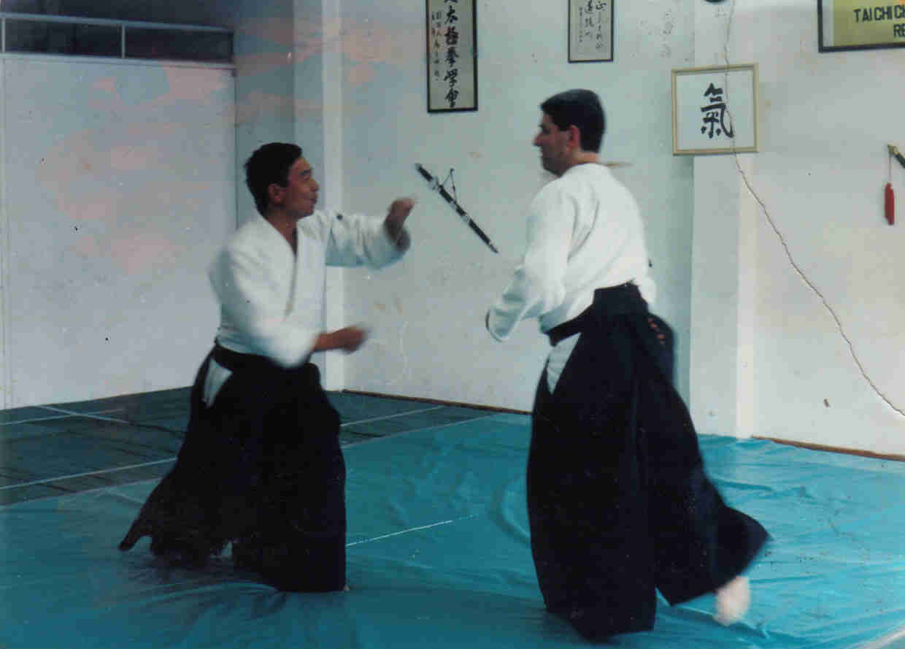
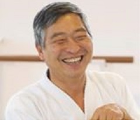
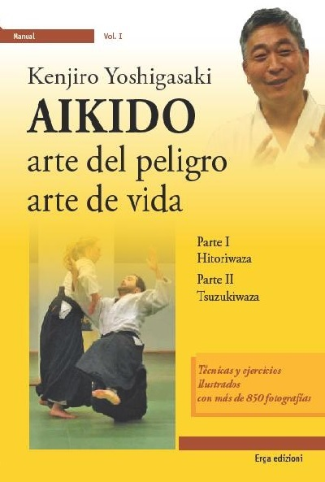

Seminarios
Temas brindados durante Seminarios por: Doshu Kenjiro Yoshigasaki

1.- Qué es Ki
Podemos dividir el mundo en dos, masculino y femenino, buenos y malos, pero también podemos dividirlo en Claro y No Claro. Algo que no es claro, eso es Ki. Porque no es claro? Este tipo de clasificación es distinta a masculino y femenino ya que claro y no claro depende de uno mismo. Por ejemplo hay muchos colores blancos, el hecho de algo sea blanco es claro, pero la diferencia entre los blancos es no claro y por eso depende de cada uno que sea clara o no la diferencia. Hay mucha gente que solo quiere vivir en lo claro. Una vez le pregunté a una persona de 60 años que era lo importante en la vida y dijo "el dinero, aún se puede comprar el amor con el dinero". Dinero es claro, Amor no tan claro. Mucha gente solo quiere ver lo claro y no quieren ver lo no claro. Ese tipo de personas se vuelven rígidas y de mente estrecha o cerrada. Hay que ver lo claro y lo no claro, así se ve el Ki. Cuando uno ve algo no claro el cuerpo se relaja. Si uno está cansado escucha música y se relaja.
Hay una diferencia entre Desarrollar Ki y dejarse estar. Si uno escucha música en forma pasiva se relaja pero no desarrolla nada. Pero si está interesado en la música, aparte de relajarse empieza a entenderla, así aunque uno escuche algo por primera vez, puede decir que es por ejemplo Beethoven, lo que significa que empieza a entender la música y eso significa desarrollar. Cuando percibimos algo que es No Claro, empezamos a entender y lo que es No Claro se vuelve Claro y este es el desarrollo del ser humano. En la escuela se aprenden cosas claras, pero estas cosas fueron hechas por artistas y científicos. El desarrollo del ser humano se trata de hacer Claras cosas No Claras, eso significa Extender Ki, cuando la mente toma esta forma, nuestro cuerpo esta relajado y fuerte. Hay que entender la diferencia entre Desarrollar Ki o dejarse ir, por ejemplo tomar vino para emborracharse o tomar para entender sobre vinos.
Con los ojos abiertos vemos algo claramente, si los cerramos y preguntamos "que ve?" si se responde "veo oscuridad o no veo nada" significa que No se Extiende Ki, ya que si se cierran los ojos se ven muchas cosas. Cuando el cuerpo esta relajado, pero esta relajación es débil, se debe esperar a que esto se clarifique para poder estar estable. Si se quiere experimentar, se puede tapar los ojos con una banda y quedar varias horas así. Entonces la percepción se vuelve muy clara y el cuerpo se vuelve muy estable. Cuando escucho música, si escucho durante varios años, seguramente se clarifica lo No Claro de ella, pero si tengo un buen maestro, en un año puedo aprender a clarificar la música. Al cerrar los ojos se perciben muchas cosas en todo el espacio. Si el cuerpo está estable, se puede percibir claramente, sin confusión y deviene el orden. Generalmente la ciencia y el arte es el resultado de esto mismo. El ver muchas cosas con los ojos cerrados significa ver Ki y hacerlo claro es desarrollar Ki.
Setiembre de 1994
Explicado por Doshu Kenjiro Yoshigasaki
Traducido por Sensei Norberto Kiman
2.- Happo Undo y los conceptos
Cuando se ven dos personas haciendo el movimiento de Happo Undo y se pregunta cuál es la diferencia, mucha gente contesta "es el mismo movimiento". Entender la diferencia entre ambos es "ver Ki". La diferencia no es clara y "desarrollar Ki" es poder ver la diferencia. Si solo se dice "es diferente" eso no es desarrollar Ki. Dividir entre lo que es claro y no claro es un "concepto". Una cosa es el concepto y otra la realización.
En Europa se dice que los productos Alemanes son mejores que los Italianos y que esto es porque los Alemanes trabajan bien y los Italianos trabajan mal. Esto está hablando de la realización, pero cuando uno ve el objeto fabricado no se cumple que sea mejor uno que otro. Si se hace un producto con un buen concepto es fácil de realizarlo, pero eso no se ve en los periódicos y la gente no habla de eso. Eso es porque los conceptos están hechos por los ingenieros y aceptados por los administradores.
Los conceptos políticos son hechos por políticos y por profesores universitarios, los conceptos en la sociedad están hechos por los periodistas y por los profesores universitarios. Esto quiere decir que los conceptos están hechos por gente rica pero los llevan a cabo los trabajadores pobres, por eso es fácil para la gente rica decir que los trabajadores pobres no están trabajando bien. Uno en vez de criticar a los trabajadores, debería criticar a los ricos que crean los conceptos. La gente critica la realización pero no el concepto. En todo el mundo es igual, la gente pobre es criticada y la rica no. Por eso hay que criticar el concepto y no la realización. Si la realización es mala es porque el concepto también lo es. O sea que si los trabajadores Italianos trabajan mal es porque los administradores e ingenieros hacen mal las cosas. Pero el concepto es difícil de ver, la realización es fácil.
Cuando se observa la diferencia entre dos personas realizando el movimiento de Happo Undo la diferencia "no es clara". Si se dice que uno está más rígido y el otro mas relajado se está hablando de la realización, pero no se está hablando del concepto. Cuando se habla del concepto que se utiliza para realizar Happo Undo uno podría sería estar interesado en "moverse" y otro estar interesado en "parar".
Cuando se usa el concepto de "parar" (y no el de moverse) es como en las películas de James Bond donde el malo está en el asiento de atrás apuntándolo y lo que hace es acelerar y de pronto frena y el malo sale por el parabrisas. Happo Undo depende de la calidad de la detención, donde luego de dar un paso largo, debe detener rápido y fuerte, entonces los brazos que se siguen moviendo van rápido y fuerte hacia arriba y bajan relajados siguiendo el movimiento. Uno debe ser capaz de moverse rápido y detenerse rápido, solo moverse rápido o detenerse rápido no es suficiente. De ese modo, cuando se es testeado por detrás el cuerpo está estable. Si en lugar de eso trata de mover el cuerpo y se es testeado no está firme porque el concepto está equivocado.
Setiembre de 1994
Explicado por Doshu Kenjiro Yoshigasaki
Traducido por Sensei Norberto Kiman
3.- Extender Ki en Kokyu dosa
En Zagi Ryotedori Kokyu Nage (Kokyu dosa) la mente va normalmente a la cabeza, al tronco o a los brazos y eso no es Extender Ki ya que la mente se detiene en esos puntos. Para Extender Ki en esta técnica por ejemplo, se debe llevar la mente a la punta de los dedos y de este modo, lo que no es claro ahora se vuelve claro. La mente normalmente no va allí, uno debe deliberadamente llevarla a la punta de los dedos para hacer claro ese punto y eso es Extender Ki. Esa es la naturaleza de la mente humana.
En el animal la mente es guiada por el instinto pero la mente humana, artificialmente, puede ir donde quiere y de ese modo crear algo. De ahí la capacidad de creación del ser humano. Generalmente si pelean un tigre y una persona el vencedor será el tigre pero el ser humano puede crear un arma y con eso vencer al tigre, así es como un ser humano se desarrolla. Lo que pasa en la sociedad es que solo los científicos y los artistas usan la mente y los demás no. Es muy difícil Extender Ki en ciencia y arte. Para Extender Ki en ciencia debo ser el mejor de los científicos y en arte debo ser un gran artista. Por eso hay que Extender Ki en la vida de uno mismo la cual es única y siempre se Extiende Ki por primera vez, siempre puedo Extender Ki en mi propia vida.
En Kokyu dosa si Uke agarra fuerte y voy en contra de esa fuerza, no estoy Extendiendo Ki, entonces lo que hago es poner la mente en la punta de los dedos y desde allí avanzar horizontalmente hacia adelante y hacia afuera. Si se enfrentan las palmas de las manos y se perciben la punta de los dedos y luego se van acercando las manos lentamente, la sensación se hace cada vez más clara. También si se hace con una sola mano la sensación también es clara. Uno mismo crea la sensación en la punta de los dedos y esa claridad es lo que hace moverse con certeza al avanzar en Kokyu dosa.
Debemos ir donde no hay nada pero aun así con claridad. Si hay algo (claridad) es fácil ir allí, pero hay que ir donde no está claro, donde no hay nada. Es como cerrar los ojos, poner la mente en la punta de los dedos y avanzar. La tendencia es la de llevar la mente al cuerpo de Uke, donde choca, donde hay algo, donde es claro. Pero hay que ir detrás del hombro de Uke, llevar la mente allí donde no hay nada, donde esta lo no claro. No hay nada allí pero creamos algo con nuestra mente que está en la punta de los dedos, de lo contrario sigue siendo no claro. Luego se avanza con un único movimiento y con un cierto ritmo similar a una línea con una suave curva (y no con dos movimientos rectos) como cuando un músico hace una prueba de ritmo.
Tenemos el hábito de ver solo las cosas claras y por eso no vemos la verdad. La verdad significa cosas claras y cosas no claras y esto forma al mundo. Las distintas tonalidades de blanco son la verdad pero decir solo "todo es blanco" es ver solo una parte de la verdad. Desarrollar Ki es como un pintor que va formando sus propios colores de una paleta. En la vida diaria esta práctica es tomar lo claro y lo no claro todo junto.
Setiembre de 1994
Explicado por Doshu Kenjiro Yoshigasaki
Traducido por Sensei Norberto Kiman
4.- La respiración y el diafragma
En la práctica de respiración, el movimiento del diafragma es algo no claro. Aún profesores universitarios no saben cómo debería moverse, porque para verlo habría que cortar y ver dentro del cuerpo de una persona. Pero si se corta el cuerpo, este no funciona muy bien y por eso es que no se sabe cuál es el movimiento sano del diafragma. Se podrían poner electrodos para intentar dirigir el movimiento del diafragma, pero la dificultad es que esto es muy caro y además la precisión es de unos 2cm y normalmente lo máximo que se mueve el diafragma son 7cm y entre 2cm y 7cm ingresa el 30% del aire. Esto es Ki, ya que no es claro porque no se puede conocer el movimiento.
Aun asi, podemos saber que si el sonido de la respiración es continuo y prolongado en el tiempo, el diafragma realiza un movimiento amplio y completo. También hay que tener en cuenta el movimiento del pecho ya que en la respiración es importante tanto el movimiento del diafragma como el del pecho. Para practicar hay que mantener el pecho arriba y exhalar y de ese modo el diafragma sube, al final el pecho baja. Manteniendo el pecho bajo comenzar a inhalar, y así el diafragma comienza a ir hacia abajo. Si se sube enseguida el pecho cuando se comienza a inhalar, no se sabe si es el diafragma o el pecho el que está trabajando y por eso el pecho se sube al final de la inhalación. O sea que controlando la exhalación y el movimiento del pecho, también controlo el diafragma y de ese modo puedo tener mucha mayor precisión que cualquier estudio científico sobre el diafragma.
La práctica tiene que ver con mover al máximo el diafragma para luego mover el diafragma lo mínimo necesario. Las personas enfermas mueven mucho el pecho porque el diafragma no trabaja bien. Luego se puede no mover el pecho y respirando, hacer que el diafragma se mueva lo mínimo necesario de tal modo que uno no siente la propia respiración.
Setiembre de 1994
Explicado por Doshu Kenjiro Yoshigasaki
Compilado y traducido por Sensei Norberto Kiman
5.- La mente mueve al cuerpo
En general cuando se pregunta qué es la mente se responde, "es el pensamiento" o "es el sentimiento". Como vivimos en una sociedad y cada uno tiene un concepto distinto, entonces acepto el concepto de otras personas, pero de esa manera soy influenciado por la sociedad y así pierdo la claridad de mis propias ideas. Debo encontrar el significado de la palabra que me permita convivir con los demás y aun así vivir mi propia vida. Por eso es difícil encontrar la palabra mente que me permita las dos cosas al mismo tiempo, vivir con los demás y mi propia vida.
Dividimos al mundo en claro y no claro, así cuerpo es claro y mente es no claro. Esto depende de cada persona. Para personas normales el diafragma es mente, cuando uno dice "me siento bien" o "me siento mal", esto también es la mente. Cuando digo "me siento ansioso" también es la mente, esto sucede por lo general cuando el diafragma no funciona bien. Para mí el diafragma es la mente, pero para un doctor que puede abrir la panza y verlo, el diafragma es cuerpo.
Ahora bien, pensamiento es mente o no? Probablemente para el psicólogo el pensamiento es mente, porque el otro no puede ver mis pensamientos, así que para el otro mis pensamientos no son claros. Por ejemplo yo puedo decir "amo a mis padres" y el psicólogo viendo desde afuera puede decir: "por su actitud no puedo decir que los odie". Los que están afuera no pueden saber lo que pienso, así que para el psicólogo lo que yo pienso es mente (algo no claro). Si yo no estoy claro acerca de lo que pienso, aun para mí mismo, mis pensamientos son mente. Si estoy totalmente claro y seguro acerca de mis pensamientos, entonces mis pensamientos son cuerpo.
Para el otro mis sentimientos son mente, ya que nunca puede estar seguro de mis sentimientos, también para mí mismo si no estoy seguro de ellos. Pero si estoy totalmente seguro de mis sentimientos y los conozco, entonces son cuerpo. De esta forma puedo mantener mi propia definición y comunicarme con los demás. En última instancia esto quiere decir mente y cuerpo son uno, la parte más clara es cuerpo y la no clara, mente.
Mente mueve al cuerpo o sea, lo no claro mueve a lo claro. Lo que es claro no puede mover a lo que es no claro. Se puede ir de lo no claro a lo claro y no al revés, por esto es que la mente mueve al cuerpo y no el cuerpo mueve a la mente. Pero un profesor universitario diría que el cuerpo puede mover a la mente. Visto desde afuera, el profesor universitario tiene razón, pero para mí mismo no es así. Solo lo no claro mueve a lo claro y esto quiere decir ser creativo.
O sea de lo no claro se hace lo claro. Por ejemplo: yo siento algo y lo niego, digo: "no, yo debo sentirme bien", o sea que contrariamente si lo claro mueve lo no claro entonces niego lo no claro. "Tal vez debería divorciarme, pero no, mejor no", "me parece que mis padres no me aman, pero no, no es así porque ellos deben amarme", "es realmente buena persona el sacerdote? no, es bueno porque son todos buenos", "está seguro que nunca hay que usar métodos anticonceptivos?, no porque nunca hay que cometer un error". En esa actitud se muestra que lo claro mueve a lo no claro, el cuerpo mueve la mente, pero es evidente que esa no es la vida real, en la vida real se va de lo no claro hacia lo claro. Esta es la definición de que es claro y que no claro.
Setiembre de 1994
Explicado por Doshu Kenjiro Yoshigasaki
Compilado y traducido por Sensei Norberto Kiman
6.- Udemawashi Undo y la Unificación de Mente y Cuerpo (parte 1)
Como se sabe que un movimiento es correcto? Hay una respuesta muy común que es: "lo que yo hago está bien para mí" y normalmente esto es llamado Democracia que es una filosofía del siglo XVIII. Debemos estudiar la filosofía en la historia, para así saber cómo influye el mundo en nosotros.
La Democracia fue de Francia a Estados Unidos y de ahí vino a Sud América. Antes, el Cristianismo decía esto está bien y esto está mal, luego la gente empezó a dudar y así apareció una nueva filosofía: "no hay nada correcto y no hay nada equivocado" o sea "lo que yo hago está bien". Pero es evidente que lo que yo hago es distinto de lo que otros hacen y eso quiere decir todo el mundo está correcto por lo tanto hay que seguir a la mayoría. Como todo el mundo está correcto, la única forma de decidir es votando y de ahí viene la Democracia. Por eso, si alguien dice "esto es democrático", nadie puede discutirlo. Es una nueva religión. Antes se decía: "esto es lo que Dios quiere" y nadie lo podía discutir y ahora esto se hace con la Democracia. De ese modo, lo que yo hago tal vez esté errado pero no eres tú el que me juzga.
En el siglo XVI mataron 1.000.000 de mujeres diciendo que eran brujas, o sea alguien las juzgó y se dijo que eran brujas y las mataron. Por eso después de eso nadie quería ser juzgado por los demás y de ahí viene "lo que yo hago está bien (bien para mi)". Por eso es mejor que otro no me juzgue a mí, pero yo debo juzgarme a mí mismo. Esa es la práctica de Meditación: "yo me juzgo, no tú" y esa es la diferencia entre Psicología y Meditación. En la sociedad se necesita un psicólogo que diga esta persona está loca o no. Hay gente que está loca y está matando personas (u otros crímenes) y hay que ponerlos en la cárcel o en un manicomio y por eso es necesaria la Psicología. Pero aunque de afuera una persona parezca normal aun así se hacen "cosas erradas". El psicólogo dice "se ve normal", pero yo puedo ver los problemas que hay en mí mismo y ahí comienza Meditación.
Al practicar Udemawashi Undo, el movimiento está correcto o no? Si es correcto sé exactamente porque. Todos los cuerpos deben caer a la misma velocidad o sea que mi brazo cae suelto igual que cualquier cuerpo en el espacio. Luego cuando el brazo llega abajo si se testea hacia arriba y el brazo se sube, significa que la persona está aceptando la manipulación de su cuerpo. En lugar de esto se debe entender el concepto de que el brazo cae con la gravedad. Cuando uno es manipulado, significa que uno no es claro consigo mismo. Luego, si controlo mi brazo en lugar de soltarlo esto se vuelve claro ya que soy yo quien realiza la caída del brazo, con lo que hay una contradicción entre lo que es claro y lo que es no claro y eso es mente y cuerpo separados. Unificación de mente y cuerpo significa hacer uno de lo claro y lo no claro.
Setiembre de 1994
Explicado por Doshu Kenjiro Yoshigasaki
Compilado y traducido por Sensei Norberto Kiman
7.- Udemawashi Undo y la Unificación de Mente y Cuerpo (parte 2)
Hay que tratar de ver cual es la velocidad del brazo y esto se ve en el movimiento de la cabeza. Si uno está claro, al caer el brazo la cabeza no se mueve. Las personas como Clinton a las que solo les interesan las cosas claras, la cabeza queda rígida. Luego las personas que se dedican a la macrobiótica o Tai Chi Chuan están interesadas en cosas no claras y tienen el cuello relajado pero excesivamente. Debe haber cierta estabilidad en la cabeza, no rígida pero estable. Luego al testear el brazo hacia arriba se observa estable lo cual significa que entiende el concepto y no puede ser manipulado.
Puede pasar que la realización del movimiento sea correcta, pero lo incorrecto es el concepto, eso tampoco es bueno, se puede ver en artistas y deportistas que la realización es correcta pero el concepto es equivocado. Por ejemplo grandes artistas y deportistas no pueden enseñarle su arte a los demás, lo cual significa que lo pueden hacer muy bien pero no tienen los conceptos claros. En el deporte puede ser bueno porque gana, pero en la vida diaria aunque puede hacer las cosas bien, no es bueno para el mundo.
En Udemawashi, si suelto el brazo a velocidad natural, el brazo queda abajo y para que suba tengo que poner un poco más de velocidad de lo contrario no sube. Ese poco extra que se pone para que suba es Ki, ese poco de Ki extra hace que el brazo suba y de ese modo el concepto está bien y la realización está bien.
Luego cuando se pregunta por el conteo, lo que antes estaba claro ahora se hace no claro y hay que volverlo claro otra vez y eso es Extender Ki. El conteo es para que nos ayude pero, que tipo de conteo nos ayuda a movernos bien? Esto es como en arte. En arte uno nunca puede probar que lo que hace es correcto. Si pienso que Picasso es un gran artista, no puedo probar que yo estoy correcto, pero si me gusta la pintura puedo pensar que tal artista es grande y tal artista no. De todos modos no puedo probarlo. En realidad no necesito pruebas para que me guste Picasso, pero puedo hablar de Picasso y mostrar sus pinturas y de ese modo naturalmente la gente se interesa y muchos piensan que es grande y lo expresan, eso es arte.
En el arte de vivir todo lo que digo no puedo probarlo, estoy seguro pero no puedo probarlo. Estoy seguro de lo que pasa dentro de mi cuerpo pero no estoy completamente seguro que mi cuerpo sea igual al tuyo, probablemente sea lo mismo pero nunca puedo estar completamente seguro. Picasso es seguramente un gran artista, no puedo probarlo, pero para mi vida es suficiente.
No tengo que probar mi vida a los demás, si yo estoy seguro es suficiente y eso es meditación. Es diferente a la universidad donde hay que probarle cosas a los demás. Ahí está la diferencia fundamental entre meditación y ciencia. De esta forma meditación es parte del arte. Se debe escuchar el conteo como si fuese música y ver si esa música le gusta.
Setiembre de 1994
Explicado por Doshu Kenjiro Yoshigasaki
Compilado y traducido por Sensei Norberto Kiman
8.- Qué es Kotegaeshi, mente pequeña y mente amplia
La mayoría de los Aikidokas a los que se les pregunta que es Kotegaeshi, dicen saber lo que es, pero en realidad no lo saben. El concepto de guiar la mano no es muy bueno ya que se confunde con atacar la mano. Estados Unidos quiere guiar a Serbia, pero si Serbia no acepta, entonces los atacan. Es como a un niño al que se le dice "por favor haceme caso" pero si no lo hace le pego. Guiar es bueno pero, es realmente bueno?
En Kotegaeshi no debería pensar en la mano, ya que si pienso en su mano Uke la protegerá resistiendo y de ese modo tengo que atacar su mano girando su muñeca hacia afuera. Que es guiar? es buscar un modo u otro para que el chico haga lo que me parece que está bien? Entonces debemos preguntarnos que es guiar realmente, su esencia, es realmente una palabra adecuada o no? Si yo trato de guiar su mano Uke puede también hacer algo en contra de eso y aunque pueda bajar a Uke de todos modos Uke sigue agarrando mi mano. No estoy tratando con su mano sino con su cuerpo entero pero Uke está tratando con mi mano.
Por ejemplo, si alguien me apunta con una pistola entonces yo miro la pistola pero el atacante está mirando todo mi cuerpo o sea que él tiene mente amplia y yo tengo mente pequeña, si trato de mover su mano el inmediatamente dispara y me mata. Siempre mente amplia es mejor que mente pequeña. Mente amplia y mente pequeña eso también es Ki, pero uno puede hacerlo claro.
Ahora en Kotegaeshi, si mi mente está pequeña (en su mano) y Uke mira calmamente hacia mí, entonces Uke ve a alguien que hace algo estúpido con su mano y él puede hacer cualquier otra cosa. Entonces el que está con mente concentrada es muy débil y el de mente amplia es muy fuerte. O sea que en Kotegaeshi, hacer algo con la mano del atacante no es un buen concepto. Como Uke está agarrando, aunque sea una parte de su mente va a mi mano, pero yo no agarro nada y mi mente puede ir a cualquier parte y por eso es más amplia. Si cuando Uke viene a agarrar ambos miramos la mano, ambos tenemos mente pequeña, pero si hago por ejemplo Tenshin levantando las manos, tengo mente amplia.
Setiembre de 1994
Explicado por Doshu Kenjiro Yoshigasaki
Compilado y traducido por Sensei Norberto Kiman
9.- Qué es Tsuzukiwaza
No es bueno cambiar el orden de las técnicas en Tsuzukiwaza porque muestra que el concepto de la técnica es arrojar al oponente. O sea que si una técnica no funciona uso la otra para arrojarlo. Luego, cuál es el propósito? arrojar al oponente o practicar una técnica? hay que arrojar al oponente o no?. Si el propósito es arrojarlo, hago cualquier cosa con tal de lograrlo, así que tarde o temprano seremos agresivos, pero prácticamente todos los que practicamos Aikido tenemos este concepto.
Hacemos la técnica para crear armonía. Hay que recordar concepto y realización. La gente habla de mala realización pero no habla de mal concepto, porque es la gente "superior" la que crea los conceptos y la "inferior" los lleva a la práctica. El jefe dice lo que hay que hacer y los empleados lo llevan a cabo. Luego, el jefe dice "No lo hiciste bien!". Es difícil para el que está abajo decirle al jefe que su concepto está errado, por eso en esta sociedad se critica lo que se hace y no el concepto. Por ejemplo en la familia los que están equivocados son los hijos y no el padre. Si el chico dice que tal vez está equivocado tiene una paliza. Por eso no es bueno pelear contra la gente superior, sino saber que concepto es bueno y cual no, es el concepto de crear armonía.
Por ejemplo el concepto de las Naciones Unidas es que todos juntos estamos correctos y vamos hacia la paz, pero los países están errados y van hacia la guerra. Si un país no acepta unirse a las Naciones Unidas, dicen que es malo y lo atacan. Pero tal vez los que están equivocados son las Naciones Unidas. Por ejemplo, un concepto equivocado de las Naciones Unidas es que la paz es la ausencia de la guerra, casi todos piensan eso. Luego, que puedo hacer para la paz en si misma? No hagan guerras, o al menos espero que nadie haga una guerra.
Si hay alguien presente, puedo hacer muchas cosas con ellos, pero si quiero la ausencia, no hay tantas cosas que pueda hacer. Solo puedo rezar y pedir "ojalá que no venga", si quiero que venga lo puedo llamar por teléfono, carta, etc. Pero si quiere venir y yo no quiero, lo único que puedo hacer es rezar que no venga. La gente religiosa dice: "debo rezar por la paz". En Japón se ven panfletos escritos por Budistas que dicen: "recemos por la paz mundial". De aquí tal vez venga el concepto de que la paz es la ausencia de pelea.
Mejor es el concepto: "La paz es la creación de armonía". Puedo hacer muchas cosas para crear armonía. Por ejemplo, como músico creo música armoniosa, que crea armonía en la mente de quien la escucha. Como maestro o profesor puedo enseñar algo armonioso. Entonces podemos trabajar por la paz realmente. En las técnicas de Aikido debemos crear movimientos armoniosos.
Si uno practica una sola técnica, la mente se interesa en arrojar al oponente. Si en cambio hacemos 7 u 8 técnicas seguidas, la mente se interesa en crear armonía. Para crear armonía, muchos hacen lo que se les ocurre, pero eso no es tan bueno. Eso significa que solo se crea armonía en vacaciones pero no los días de trabajo, ya que en vacaciones hago lo que se me da la gana y no así cuando trabajo. En realidad es más fácil hacer cualquier técnica, pero no es práctica real. La práctica real es tener armonía cuando uno trabaja.
Yo les enseño con conceptos definidos, los cuales ustedes deben seguir, por lo tanto es un poco como el trabajo. Pero en esta estructura definida, deben crear armonía. En el colegio si el profesor está siempre marcando cosas, a los chicos les cuesta ser armoniosos. En Europa les dejan hacer lo que se les ocurre para ser armoniosos, pero esto en lugar de dar armonía, muchas veces crea caos. Entonces debemos tener cierta estructura y en ella crear armonía. Eso es Tsuzukiwaza, hay 7 u 8 técnicas definidas, en una secuencia determinada y creamos armonía dentro de ella.
Setiembre de 1994
Explicado por Doshu Kenjiro Yoshigasaki
Compilado y traducido por Sensei Norberto Kiman
10.- Aikido no es autodefensa y el movimiento natural.
Al atacar en Aikido, lo hacemos de un lado y del otro para desarrollar correctamente una técnica, pero en una situación real no nos van a atacar de un lado y del otro, sino que lo van a hacer de un solo lado y el lado lo elige el atacante y lo va a hacer a una velocidad natural ya que la velocidad natural es la mas rápida. Como saber cuando la velocidad es la más rápida? depende desde donde se mida la velocidad. Si se mide por ejemplo la velocidad del cuerpo al realizar Tsuki desde el punto que sale el golpe hasta que llega al cuerpo del atacado, la forma de llevar el codo atrás y luego golpear es la más rápida. Pero si toma el tiempo desde que desea golpear hasta que llegó la mano al lugar del impacto la forma de Tsuki donde saco el golpe directo desde la posición en la que está, será la forma más rápida. En el primer caso deseo golpear, pongo tensión en mi cuerpo y luego golpeo. En el segundo caso cuando deseo golpear, ya golpeo, inmediatamente y sin tensar el cuerpo.
En ese caso usted debe ver mi decisión de pegar, o sea que debe ver mente. Luego cuando puede ver mente, si quieren atacarlo usted puede sentir eso. El movimiento natural es el más rápido si está medido desde el movimiento de la mente. Si al atacar se relaja y se es natural, entonces uno solo lo tiene que hacer y simplemente ataca. Si se es lento al atacar es porque se pone tenso. El ataque no es con el brazo rígido sino que está flexible y relajado. A veces veo caídas espectaculares al hacer una rolada hacia adelante pero eso no sucede en la realidad, esto sucede cuando el arte marcial se transforma en un show. Si se quiere un show mejor ir al circo. Hay que desarrollar la vista para poder ver el movimiento correcto. Cuando se vé un buen jugador de tenis se ve un buen movimiento. Hay que ver la cualidad de las cosas.
Las dificultades en Aikido son psicológicas, esto significa que se tiene un concepto equivocado. La mayoría piensa en atacar o defender y así se toma el Aikido como autodefensa. Esta idea viene de Inglaterra. Una vez le pregunté a los Ingleses si era posible vivir pacíficamente, ellos contestaron que sí. "Pero si Francia los ataca, que hacen?" y respondieron "Oh Francia, los vencemos!!", "pero me dijeron que podían vivir sin pelear..." y respondieron "autodefensa no es pelea". Luego en Estados Unidos (Estados Unidos son básicamente la continuidad de los Ingleses) en las películas del oeste se ve que, si yo mato, a mí me ahorcan, pero si usted me trata de matar a mí y yo lo mato primero, entonces yo soy una buena persona, o sea que si actúo primero soy una mala persona pero si actúo mas tarde soy una buena persona. Esto significa que si soy un mal asesino soy una mala persona, y si soy un buen asesino (ya que disparo antes pero después que el otro sacó su pistola) soy una buena persona.
Eso significa que la persona mas fuerte es la mejor persona. Esa es la tradición Inglesa, que siendo mas fuertes se forma el Imperio Británico donde "el sol nunca se pone". Luego el imperio Inglés se debilitó y Estados Unidos fue el más fuerte y la tradición dice que el más fuerte es el mejor. Esto es peligroso porque el que es más fuerte hace lo que quiere. Pero si alguien llega a ser mas fuerte que ellos entonces ahí va a haber un gran peligro para el futuro. Mientras ellos sean los mas fuertes no hay problema, pero cuando haya alguien igual de fuerte ahí va a haber dificultades. Con esta filosofía se llega a la idea de ataque y defensa. De cualquier modo se trata de causar un daño a otra persona. Si usted ataca primero entonces ataca y si ataca mas tarde entonces se defiende. Desafortunadamente aún los Japoneses están contaminados por esta idea de Estados Unidos.
Por ejemplo si alguien realiza un Tsuki esa persona me está atacando, pero si ahora yo le corro el brazo y le pego con la otra mano, yo me estoy defendiendo. En realidad estamos haciendo lo mismo, la única diferencia es que uno empezó primero y el otro más tarde. Comenzar después significa ser mejor luchador, ya que es la buena persona porque se está defendiendo. Este tipo de filosofía es la que lleva a la guerra. Ataque y defensa es la misma cosa, pero los Ingleses dicen que autodefensa no es pelea, ya que tienen esa filosofía de que un buen peleador es la buena persona y por eso tratan de ser el país más fuerte del mundo. Esta filosofía es el origen de la guerra. Por eso es que debemos ver los conceptos, uno no debe defenderse sino crear armonía. Esto es difícil porque en las sociedades se habla de ataque y defensa. También se ve en las películas de TV y cine donde hay ataque y defensa.
En Bélgica si alguien se acerca hacia mí con un arma y yo lo mato, no es culpable sino que es autodefensa. O sea que también está en las leyes. Pero si se escapa y yo lo mato a él, entonces yo soy el culpable, de ese modo para mí es mejor matarlo cuando está viniendo, antes de que empiece. Si lo mato antes que me ataque es autodefensa, esta ley crea nuevos asesinos. Estas leyes están hechas de acuerdo a ciertas filosofías y debemos entender esto. Entonces armonía no es atacar ni defender, solo crear armonía. La armonía natural significa que independientemente de mi intención, algo sucede. Cuando dos cuerpos se encuentran y se mueven, naturalmente algo pasa. La práctica del Aikido, es crear un movimiento que no daña mi armonía. Eso es todo, crear movimientos que no dañan mi cuerpo y no pensar en atacar o defenderse, solo crear movimientos.
O sea que la dificultad es psicológica porque uno trata de tirar al otro (como ataque o defensa) ya que no se conoce bien el movimiento, de ese modo, no es una cuestión de filosofía sino de práctica. Si no conozco los movimientos naturales, entonces no lo puedo hacer. En Aikido hay que practicar muchas posibilidades de movimientos.
Setiembre de 1994
Explicado por Doshu Kenjiro Yoshigasaki
Compilado y traducido por Sensei Norberto Kiman
11.- Evolución de las técnicas de la pelea a la armonía
Hace varios años en Francia un 5º dan de Aikido vino a mi porque estaba desilusionado con su maestro japonés. Él quería aprender las verdaderas técnicas de Aikido, las técnicas enseñadas por el fundador Morihei Ueshiba, donde no pudiera ser tocado y pudiera arrojar a todos, quería tener un gran poder. La gran inconsciencia humana desea ese poder como Hitler, Napoleón y tantos otros. Si eso era verdad entonces podría arrojar a cualquiera. Afortunadamente eso no es verdad.
Una vez Ueshiba fue preso por la policía China ya que creían que era un espía y la embajada Japonesa lo tuvo que sacar. O sea que Ueshiba, a pesar de su poder, no podía hacer nada pero sí los políticos que lo tuvieron que sacar de la prisión. En definitiva son los políticos los que tienen el verdadero poder.
Otra vez Ueshiba se enfrentó con Bokken a un joven campeón de Kendo y este joven lo venció y Ueshiba dijo que era un buen joven y lo adoptó como a un hijo. Dijo que iba a tener éxito en el Aikido, pero luego de dos años esa persona se fue. Nadie es imbatible. Como Ueshiba murió, no se puede hablar mal de él, pero de los que están vivos sí. Un gran maestro no es grande porque sea fuerte, un gran maestro es grande porque logra algo.
El 5º dan dejó de hacer Aikido, el tenía la ilusión de tener ese poder y cuando se desilusionó, dejó de practicar. Y es mejor que se detuvo y no solo en Aikido sino en otras artes marciales donde se practica con esa ilusión. Eso no es bueno para el mundo, tal vez es bueno para hacer negocios. Si se quiere hacer negocios es mejor hacer algo que genere ganancias. Es mejor crear una ilusión como el mago David Coperfield, es más honesto, o hacer películas que creen una ilusión.
Esto es porque se tiene el concepto de ganar o perder, pero nadie puede ganar todo el tiempo. Todos los imperios en algún momento se debilitaron y cayeron. El propósito de Aikido no es ser más fuerte sino crear armonía. Aún así nadie tiene la seguridad de tener éxito. Por ejemplo, uno tiene una pareja para ser feliz y formar una familia feliz pero, hay alguna pareja que no pelee? Aunque sabemos esto, aún así tratamos de crear armonía. No hay garantía de que podamos conseguirlo, pero igual se intenta.
Las técnicas de Aikido cambiaron, están cambiando y van a cambiar más, ya que en el comienzo eran técnicas de pelea. El maestro de Ueshiba, Takeda Sokaku, él era conocido como un cruel asesino, era muy peleador y cuando se enojaba comenzaba a pelear. Claramente él creó muy buenas técnicas de pelea. Ueshiba aprendió técnicas de pelea pero afortunadamente creía en una religión y trató de crear armonía en esas técnicas y algunas de ellas las cambió, pero la mayoría no tuvo tiempo de cambiarlas. Cambiar las técnicas es muy difícil, lleva mucho tiempo. En música o danza, cambiar las técnicas lleva mucho tiempo, el cambio lleva muchas generaciones. Luego Tohei Sensei cambió las técnicas de Ueshiba y ahora nosotros podemos crear más armonía y eso es lo que estamos haciendo.
Setiembre de 1994
Explicado por Doshu Kenjiro Yoshigasaki
Compilado y traducido por Sensei Norberto Kiman
12.- El cuerpo se mueve, la percepción no
Si sentados en seiza movemos el cuerpo del compañero, eso confunde la mente del otro, ya que percibe su cuerpo por dentro, ve su cuerpo moviéndose y de ese modo se vuelve inestable y no puede resistir el test. Cuando el cuerpo se mueve la percepción no tiene porque moverse. Por ejemplo si estoy conduciendo un auto, mi cuerpo se está moviendo pero la percepción no tiene porque moverse. Cuando se es testeado hay que ver dentro y fuera del cuerpo al mismo tiempo, ver todo el espacio como uno.
Si se enoja con su mujer y trata de no mostrar su enojo, ahí no hay armonía. Entonces que hago?. Si ve a su esposa fuera de usted se entra en contradicción, uno debe verla desde dentro. Eso es meditación, ver la vida desde adentro, no desde afuera. Si pienso, yo voy a ser un doctor, eso no es meditación, ya que estoy mirando desde afuera.
Meditación es en cada momento ver que es lo que estoy haciendo. Cuando hace una técnica de Aikido no le haga una técnica al otro, no guíe a su compañero ya que estaría viéndolo desde afuera. Usted debe ser capaz de verlo desde adentro. Uno debe ser capaz de vivir en sociedad sin contradicción con la meditación.
La amistad es muy importante en Italia pero muchos amigos se convierten en enemigos. Entonces la amistad es buena o no? Muchas veces sucede que las amistades muy fuertes se convierten en grandes enemigos. En la mafia hay muchos amigos pero afuera esos mismos amigos te pueden matar. La tendencia es que si se tienen amigos muy fuertes, fuera de los amigos también hay enemigos muy fuertes.
Luego, que es la amistad?. Se tiene amigos realmente? que es tener un amigo?. Si uno tiene amigos los que no lo son, que son? cual es la diferencia entre amigo y conocido? Si amigo es en quien uno confía, la gente en la que no se puede confiar entonces son enemigos. Si ahora tomo en cuenta el afecto, yo amo a alguien pero esa persona se va, entonces la odio. Esto significa que se esta aceptando el dualismo como una manera de vivir. Tengo amigos y tengo enemigos o mi amigo mas tarde puede ser mi enemigo.
Pero también podemos tener una concepción diferente de la relación humana de una forma no dualista. El concepto de amistad es muy fuerte en los latinos, pero no para toda la humanidad. Es una tradición mas vale Española e Italiana. También ocurre en extremistas Islámicos quienes matan por las diferencias de religión. Otra forma de ver las relaciones humanas es: tengo un espacio alrededor mío, cuando alguien está en ese espacio el espacio cambia o no? Si es una buena persona y entra en una buena familia, esa persona no perturba ese espacio, pero si entra un extraño o alguien peligroso eso cambia el espacio. Si es peligroso mejor hacer algo, pero si no lo es, es solo una dificultad psicológica.
Es una idea similar a cuando tengo un pensamiento, como reacciona mi cuerpo a ese pensamiento cuando entra a mi espacio? Por ejemplo si uno se muda a un departamento nuevo, se siente extraño en ese lugar nuevo, pero si tiene ese departamento por un cierto tiempo se empieza a sentir bien, se siente familiar. Los seres humanos también, cuando nos sentimos juntos, nos sentimos uno. Pero si estamos conscientes de este hecho, este sentirse extraño se produce mucho mas rápido y podemos prevenir la aparición de "enemigos".
De ese modo aunque el cuerpo se mueva, ese espacio no debe moverse, luego al mover el cuerpo del compañero y testear se encuentra estable ya que, al no moverse la percepción la sensación de estabilidad del cuerpo es diferente.
Setiembre de 1994
Explicado por Doshu Kenjiro Yoshigasaki
Compilado y traducido por Sensei Norberto Kiman
13.- Diferencia entre conceptos y percepción (Parte 1)
Hace varios años tuve una larga discusión con un profesor en la universidad politécnica en Milán, Italia. Era un profesor de biofísica y me hizo un pregunta importante, "donde esta la mente?". La mayor parte de las preguntas se pueden explicar pero esta no. Ya que es una pregunta muy difícil la respuesta era muy fácil. "La mente esta mas allá del espacio". Porque cuando uno dice "donde", esta hablando del espacio. Pero solo se puede decir "donde" acerca de cosas materiales, la materia existe en el espacio, pero hay algo que existe fuera del espacio.
Percepción es algo que vemos o sentimos así que son las cosas materiales. Es evidente que la energía también es material por la famosa ecuación de Einstein, pero "concebir" o sea "concepto" no es materia, sino la relación con la materia. Todo lo que puede ser percibido podemos ubicarlo en el espacio, pero "el concepto no es materia", no existe en el espacio. La mente es un concepto, no es percepción y por eso no puede decirse donde esta. Por ejemplo, sentimiento es una percepción, puedo decir "siento en la cabeza" o "siento en el pecho" o "siento en el cuello". Pero el concepto es algo muy difícil de entender. En latín existen las palabras "concebir" y "percibir".
El verbo concebir se corresponde con concepto, el verbo percibir se corresponde con percepción. Estas palabras nos permiten entender, pero en Alemán u Holandés no tienen estas palabras y por eso es más difícil entender para ellos. En Japonés tampoco tienen estas palabras, es casi imposible explicar esto en Japón. Pero en Español ya existen y esto determina de que forma uno mira al mundo. Antes de ir a Italia yo estudiaba Italiano y de ese modo enseñaba en el idioma de ese país. Yo no estoy interesado en aprender el idioma donde voy, porque si hago eso por ejemplo los Italianos no aprenden el idioma extranjero ellos mismos. Es mejor que uno mismo aprenda idioma extranjero, porque entonces uno va a percibir que esta limitado por su propio idioma.
Cualquier concepto que sea bueno para hacernos entender es mejor usarlo. Por ejemplo, la palabra Japonesa "Ki" es imposible traducirla a idioma Europeo, pero la usamos porque es un concepto muy útil. De todos modos es bueno poder explicarlo en el propio idioma. Por eso el concepto de Claro y No Claro que expliqué anteriormente el cual también se le puede explicar a los Japoneses.
Pero hay que comprender que es concepto y que es percepción. Percepción comúnmente es llamada realidad, pero depende de la propia percepción ya que depende del concepto y por eso es importante tener conceptos correctos. Luego, que es un concepto correcto? Un buen concepto es el que permite percibir la realidad. Pero vemos que en el mundo hay muchos conceptos equivocados. A veces los propios gobiernos intentan dar conceptos equivocados a su pueblo y de ese modo el pueblo no ve la verdad. Por eso es importante uno mismo examinar sus propios conceptos porque no existe sociedad que no tenga sus intereses. Toda sociedad quiere que ciertas cosas la gente las perciba y otras no. En cada sociedad se crean los conceptos convenientes a esa sociedad.
Los conceptos están creados por el lenguaje, luego, quien crea el lenguaje? Los maestros de escuela y los periodistas. Cuando uno es chico aprende de los maestros de escuela y de grande de los diarios, libros y TV. Estas personas son gente rica, o sea que la gente rica crea los conceptos y de ese modo la gente rica puede permanecer rica.
Por ejemplo la palabra Estados Unidos se puede escribir en Japonés en letras Kanji. En Japón a los 10 años de edad todos pueden leer y escribir en Kanji. Los Kanji para Estados Unidos son unidos, gente, país o sea "gente unida", pero es una traducción incorrecta ya que es Estados Unidos. Un periodista Japonés escribió hace varios años que quería cambiar el Kanji que significa "gente" por otro que significa "estado" y se veía muy bien. Pero el gobierno Japonés no quiso modificar ese error porque sino la gente va a ver que es "Estados" unidos y no "gente" unida. Pero los Japoneses quieren que crean que es un país "democrático" o sea el país de "gente para la gente" porque si lo cambian la gente va a empezar a dudar, es un país democrático o no? Así que el gobierno dice "sin comentario, no se cambia". De ese modo aún hoy los alumnos deben aprender esta traducción que esta errada.
Hay muchas cosas que están en el límite y se pueden discutir, pero este es un error muy evidente, pero aún así el gobierno no quiere cambiar. Muchas cosas aún mas sutiles que estas existen en todas las sociedades. No interesa tanto el problema político sino que hay un concepto errado que produce contradicción en la propia vida.
Setiembre de 1994
Explicado por Doshu Kenjiro Yoshigasaki
Compilado y traducido por Sensei Norberto Kiman
14.- Diferencia entre conceptos y percepción (Parte 2)
El universo es uno, así que si yo percibo el universo claramente, yo también soy uno, pero si hay un concepto errado y percibo el universo de esa manera entonces también hay un conflicto. Por ejemplo si uno piensa: "punto uno, punto uno, punto uno", aunque se esfuerce va a haber un conflicto de todos modos. Entonces, como puedo ver un conflicto y unificar mi vida?. Para percibir correctamente necesitamos el concepto correcto pero para tener un concepto correcto, necesitamos una percepción correcta, luego que va primero el huevo o la gallina? por algún lado tenemos que comenzar, así que empezamos levantando los brazos y percibiendo las líneas, de esta forma el estar amplios, nos permite tener una correcta percepción lo cual crea conceptos correctos y de ese modo tenemos un movimiento correcto hacia la verdad.
No tienen que adoptar el concepto que yo les doy, sino que uno mismo debe tener su propio concepto, porque es evidente que el concepto depende del significado de las palabras y cada persona entiende algo diferente de la misma palabra. La gente en general no sabe si la mente es un concepto o es una percepción. Si es una percepción puede decirse donde está, pero para el concepto esto no tiene sentido, entonces, que es percepción o concepto?, en la universidad opinan que la mente debe ser una percepción y esto es porque tienen que escribir libros, su trabajo no tiene utilidad, pero para escribirlo hay que poder percibirlo, medirlo con aparatos, por eso para el profesor universitario es difícil definir la mente, porque no saben con cual percepción definir la mente y por eso se vuelve complicado. Por eso es más fácil definir la mente como un concepto, de ese modo las cosas se vuelven mucho mas fácil.
Todo lo que percibimos es lo que nuestro cuerpo percibe, cuando el cuerpo esta unificado y armonioso, donde va la percepción? Para entender esto primero debemos ver donde está el espacio y para esto tocamos el techo. Luego el espacio esta en todas direcciones. La pregunta es, que es una percepción armoniosa?, donde esta la percepción? es armonioso percibir adelante, al costado o donde? Yo no sé cual es la conclusión de cada uno, pero para la práctica en la vida diaria la pregunta debe ser: mi percepción es armoniosa o no? Luego, puedo por ejemplo percibir el sonido en la exhalación y decir "este sonido es armonioso". Cuando hablo con otras personas en la vida diaria mi voz, es armoniosa o no? Especialmente cuando estamos discutiendo con la familia y percibo algo raro en mi voz, que mi voz no es armoniosa, entonces inmediatamente puedo cambiar algo, luego si mi percepción cambia digo "debo ser cuidadoso ya que estoy perdiendo la armonía". La percepción debe ser muy sensible y precisa.
Setiembre de 1994
Explicado por Doshu Kenjiro Yoshigasaki
Compilado y traducido por Sensei Norberto Kiman
15.- Los movimientos son conceptos
Cada palabra es un concepto, todas las palabras son conceptos, el lenguaje es un conjunto de conceptos. Uno está limitado por el propio idioma, por eso aprendemos varios idiomas, se nos invita en nuestro país a aprender otros idiomas? Esto depende del gobierno. En Estados Unidos se promueve a aprender otros idiomas que no sea inglés, también en Japón. O sea el gobierno prefiere que las personas conozcan el mundo o no? esto es muy importante. En Japón, el primer ministro está cambiando mucho, pero eso no es lo importante. Lo que si importa es como va cambiando el idioma Japonés. Eso es lo que decide como se va a mover la gente, porque no hay ningún político que vaya en contra de la gente, es lógico tarde o temprano es la gente la que decide, pero lo va a hacer en base a sus conceptos, y el concepto está limitado por el lenguaje. El lenguaje está hecho por los reporteros. Uno mismo puede ver que hace muchos años atrás hablaba distinto que ahora pero, quien cambió el lenguaje? básicamente los periodistas.
Las palabras son conceptos, pero los movimientos de uno también son conceptos. Los movimientos que uno realiza son conceptos inconscientes. O sea que hay conceptos que no son expresados por las palabras sino por los movimientos del cuerpo. Por ejemplo hace 14 años que vivo con mi esposa y hace unos días estaba haciendo cálculos mentales y mi esposa me preguntó "que te pasa? estás triste?", o sea que eso es un concepto sobre el movimiento. Estaba calculando algo y en Europa interpretan que está triste y aunque hace tanto tiempo que viven juntos, su esposa no comprende eso. Ese tipo de conceptos están muy profundos en uno y debemos hacernos conscientes de ello, porque eso es lo que determina la vida de uno, aún cuando no es fácil verlo por uno mismo. Por eso es una muy buena oportunidad ir a países extranjeros, pero otra forma es practicar movimientos. Ese es el sentido del entrenamiento de Aikido.
En que dirección se extiende el Ki cuando uno señala? Mucha gente pregunta la diferencia entre el Ki y la mente. La mente está donde uno señala. Cuando uno quiere ser preciso separa estas dos palabras. Ki es un concepto, mente también es un concepto, no puedo decir donde está la mente, pero igual digo que la mente está en la punta del dedo. Cada palabra puede significar concepto y también percepción. Por ejemplo "energía" es concepto o percepción? Originalmente es concepto, pero podemos usarlo también como percepción, por eso podemos decir "la sensación de la energía" y eso es percepción. Pero en el sentido estricto, energía es un concepto. Por eso al hablar algunas veces quiero decir concepto y otras sensación, la percepción de la energía.
Luego con la mente es lo mismo, en sentido estricto es un concepto, pero en la vida diaria podemos verla como una percepción, porque en ese caso la mente significa atención y mi atención depende de mis conceptos. Por ejemplo si apunto a alguien con una pistola pero esa persona no sabe que es una pistola, la persona la va mirar para conocer de que se trata, pero si sé lo que es inmediatamente subo las manos, o sea que esta reacción depende del concepto.
La atención depende del concepto y por eso decimos ponga su mente ahí, en la punta del dedo. Pero mi mente, va de la punta del dedo a algún lugar o ya está en ese lugar? Por ejemplo con una pistola las balas salen de la pistola hacia el objetivo, o sea que si quiero matar a alguien que está a una distancia la bala va a matar a todo el que esté en el medio, pero la mente ya está allá y no está en el medio, la mente no se mueve a través del espacio, sino que ya está ahí.
Donde está el Ki? el Ki va en todas direcciones, entonces no tiene que chocar, mi mente está en la punta del dedo y el Ki en todas direcciones, entonces el concepto es mejor. Por ejemplo "mira esa linda flor", "mira esas lindas estrellas" o "tu eres el culpable, tu eres el responsable", algo que está yendo hacia el otro eso es atacar, el amor, va directo a la personas o va en todas direcciones? eso cambia el comportamiento. O sea que se puede Extender Ki de una u otra forma.
Setiembre de 1994
Explicado por Doshu Kenjiro Yoshigasaki
Compilado y traducido por Sensei Norberto Kiman
16.- La actitud mental en las técnicas de Aikido
Extender Ki es poner la mente en lo que no es claro y clarificarlo, pero mucha gente no quiere ver eso. Había un 8º dan de Aikido, 9º dan de Judo y profesor universitario que decía: "ante un ataque si están separados físicamente utilicen Aikido pero si están cerca utilicen Judo". El solo quería ver algo claro, solo le interesaba arrojar al oponente, entonces Ki es la diferencia.
Al principio el ataque era con los puños, luego se atacó con la espada y luego con armas de fuego, ahora el ataque es mucho mas sofisticado como con bacterias y armas de todo tipo, pero aún el ataque sigue siendo ataque. Para pegar hay distintas formas, depende de mi mente. Existe una forma armoniosa y otra destructiva de pegar. Aún así, pegar es mejor hacerlo con armonía, pero no se puede practicar pegarse realmente unos a otros. Si fuera necesario en la vida real, debemos pegar con armonía, por eso practicamos de esta forma para entender que es armonía.
Incluso en mi vida puede ser que tenga que matar a alguien. Por ejemplo si hay un loco que quiere matar niños quizás tenga que matarlo a él antes pero, como matarlo? mucha gente piensa "de cualquier modo" por ejemplo tomo una pistola y disparo. Pero aún para matarlo hay diferentes modos, cual es el "modo correcto" de matarlo en un caso así? Es evidente que no puede practicarse matar a alguien.
Cuando Uke sostiene firme en Katatedori, yo siento el lugar del agarre, entonces quiero atacar eso que siento para hacer Tenkan (Tenshin), o también quiero evitar el ataque yendo de costado. En la técnica no hay que atacar al compañero con el Ki. Esto se ve en la rigidez de los dedos o del cuerpo. No importa lo sofisticada que sea la técnica, igual se esta atacando y Uke eso lo siente. De ese modo no atacar quiere decir poner la mente en la punta de los dedos y mantener la mano relajada durante el movimiento. Entonces no se debe atacar ni evitar el ataque, ni atacar ni defender, simplemente sentir la punta del dedo e ir a Tenkan (Tenshin), la sensación es distinta. Sentir algo claro, significa que percibo mi cuerpo que esta en la posición inicial y al pasar a Tenkan (Tenshin) siento lo mismo. En cambio si percibo algo no claro, el sentimiento de Uke mientras cambio la posición es diferente ya que estoy Extendiendo Ki, no ataco, ni defiendo.
Luego de pasar a Tenkan (Tenshin) no voy directo hacia Uke, sino simplemente mantener la mente en la punta del dedo y de ese modo Uke también lleva su mente a la punta del dedo y así la mente de ambos se mueven juntas porque están allí. Por ejemplo le digo a Uke señalando: "mira esa hermosa flor!!" o sea que vamos juntos hacia allí, luego mantengo mi mente en ese lugar sin ir hacia Uke.
Si vemos la diferencia con la que se pasa a Tenkan (Tenshin) desde Katatedori, esa diferencia es Ki, eso cambia mi vida y termina cambiando al mundo.
Setiembre de 1994
Explicado por Doshu Kenjiro Yoshigasaki
Compilado y traducido por Sensei Norberto Kiman
17.- Amor significa ver desde adentro
Que es una percepción armoniosa? Mantener el punto uno (ampliar la mente tocando el techo) y ver donde va la percepción. Si uno observa esto, naturalmente se esta haciendo mitad, mitad, mitad o doble, doble, doble. Esa es la lógica del cerebro, el cerebro humano está hecho para seguir esa psicología.
En matemática se ve una línea con puntos -2,-1,0,1,2 o también tres planos X,Y,Z y todo esto tiene que ver con la percepción del espacio. Esto es percepción objetiva, o sea el observador esta fuera de lo que percibe. De esa forma se estudia en la universidad. Para la materia eso esta bien porque uno esta siempre fuera de la materia. También para la sociedad porque por ejemplo puedo estar fuera de la sociedad Americana. Lo mismo con otra persona, yo estoy fuera de tí así que puedo analizarte.
Pero si por ejemplo quiero llevar a alguien a algún lado, puedo abrazarlo y acompañarlo o también puedo empujarlo desde atrás, o podría puedo abrazarlo y llevarlo apuntándolo con una pistola en la otra mano. Puede ser que los que ven desde afuera vean lo mismo, pero la persona que es llevada no lo siente igual. Tal vez el resultado sea el mismo, pero el otro no siente lo mismo. Ese es el problema en la práctica de Aikido, a veces desde afuera no se ve la diferencia si uno esta atacando al compañero o no.
Observando desde afuera no puede verse todo el universo, ya que yo estoy dentro del universo. Si uno esta interesado en el universo completo no puede usarse el método universitario. Luego cuando percibo todo el universo, es el espacio que percibo desde dentro, desde mi vida. Según la idea universitaria, el espacio que percibo esta fuera de mi vida y esa es la diferencia. Pero si uno ve algo desde afuera, no estoy realmente sintiendo lo que sucede, o sea que no hay amor. Si estoy fuera de lo que percibo entonces no hay amor, si lo que hago lo estoy sintiendo, entonces es parte de mi vida. Por ejemplo, amo a mis hijos y mis hijos son parte de mi vida, no puedo estudiar a mis hijos o a mi esposa desde afuera sino percibirlos dentro de un todo en el cual yo estoy incluido.
Eso es lo que significa unificar el mundo y a eso se lo llama meditación. Por eso meditación no puede estudiarse con la idea de la universidad, solo puede estudiarse en un lugar libre. Porque desafortunadamente los profesores universitarios no están libres, ya que siempre tienen que escribir acerca de lo que hicieron. Ese es el problema de una estructura científica o universitaria y por eso meditación debe estudiarse desde fuera de una estructura de este tipo. Mucha gente no entiende cuanto ese tipo de estructura limita su actividad, ya que debido a esa idea siempre tienen que estar fuera del mundo y debido a eso no pueden expresar su amor.
Setiembre de 1994
Explicado por Doshu Kenjiro Yoshigasaki
Compilado y traducido por Sensei Norberto Kiman
Artículos

Bibliografía

Mirá videos de la práctica